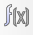
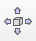
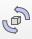
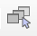
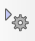

可開啟數學計算式，裡面的Collision跟Distance是Bubble Rob所具備的東西。
可平移物體的x,y,z軸。
可旋轉物體的方向。
可調整視角。
開啟當下選擇的物體的設定欄。
↪Simulation Setting➔At simulation end➔☑Reset scene to initial state(回到最初的位置)
快點Sphere前面的方格兩下➔Shape➔View/modify geometry(可調整物體大小)
快點Sphere前面的方格兩下➔Shape➔Adjust color➔Ambient/diffuse component(可調色)
快點Sphere前面的方格兩下➔Common➔☑Object is model base(變成model)
快點Sphere前面的方格兩下➔Common➔☑Object/model can transfer or accept DNA(model可用程式輸入)